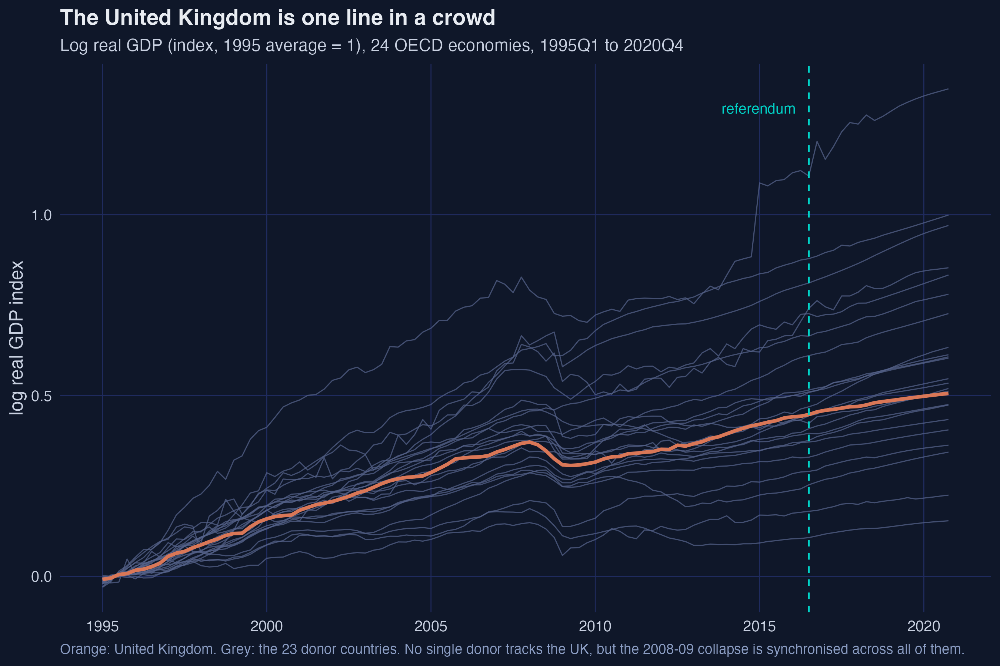
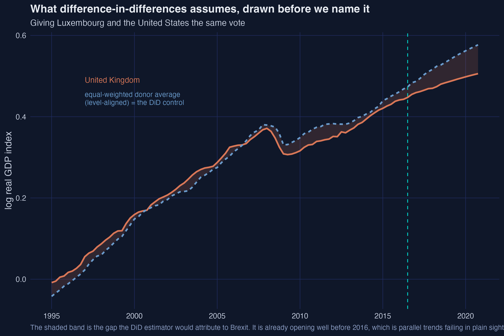
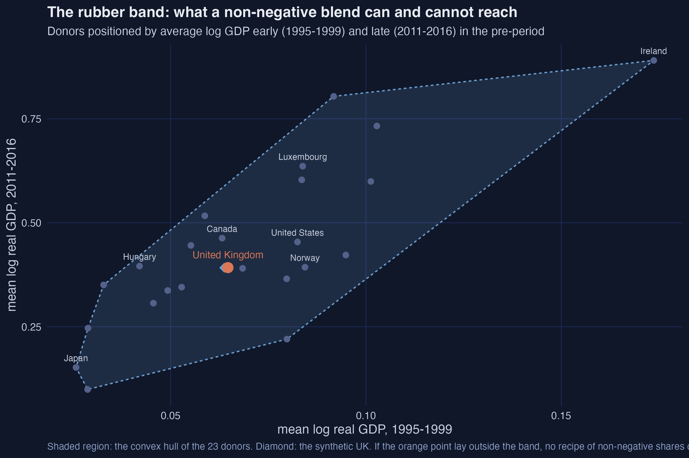
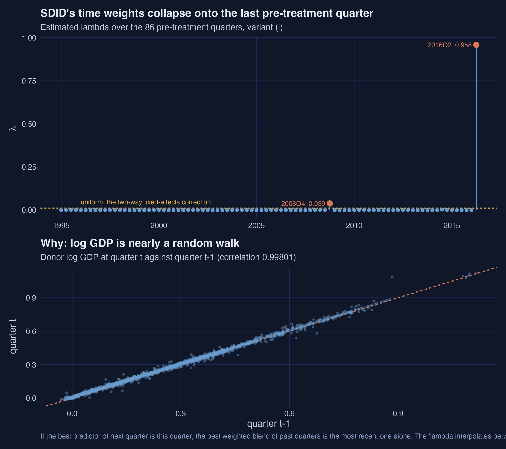
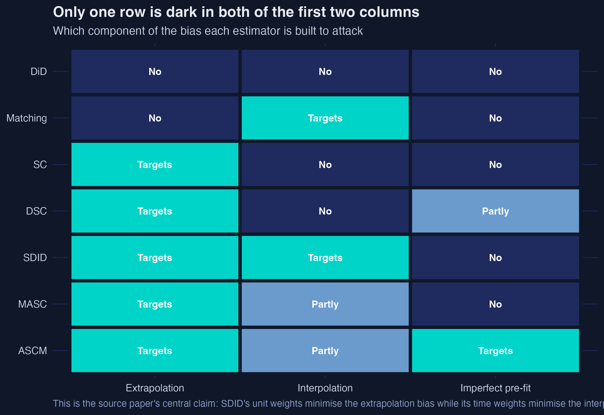
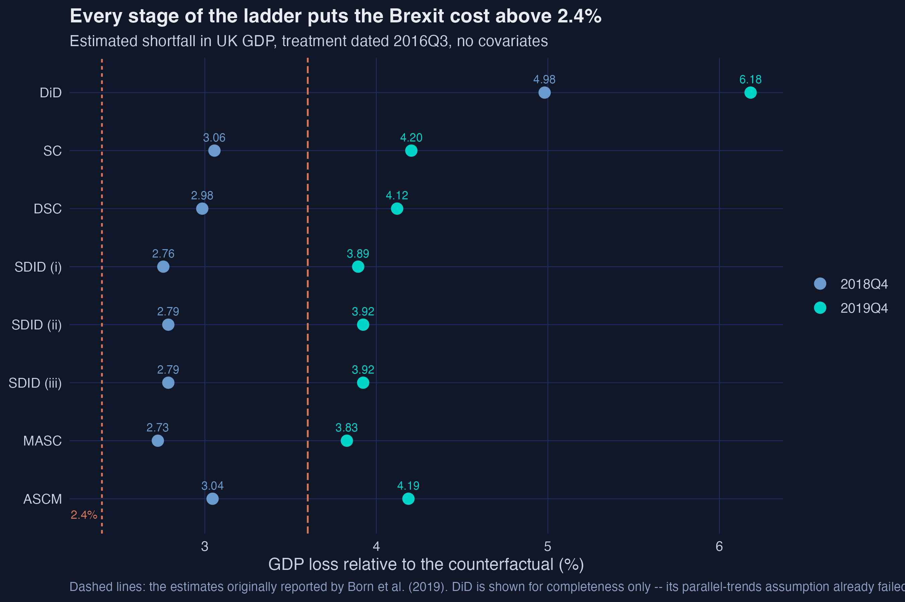
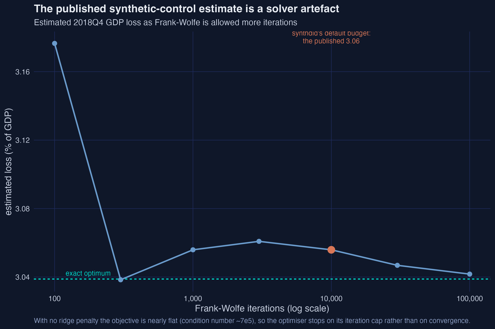

A ladder of synthetic control estimators, and what Brexit cost the UK
Nagoya University (GSID)
August 2, 2026
Act I
On 23 June 2016 the UK voted to leave the European Union.
To price that decision we need the UK that stayed. It does not exist in any dataset.
Where do we get the counterfactual?
24 OECD economies, quarterly log real GDP, 1995Q1 to 2020Q4.
Give each donor a weight. Require the blend to track the real UK for twenty-one years. Read off the gap afterwards.

Born, Müller, Schularick and Sedláček (2019) estimated that the referendum had cost the UK about 2.4% of GDP by the end of 2018.
That number came from one estimator with one set of choices.
This deck climbs the whole ladder and asks whether 2.4% survives.
Act II
\[\left(\hat{\tau}, \hat{\alpha}, \hat{\beta}\right) = \arg\min \sum_{j} \sum_{t} \left( y_{j,t} - \alpha_j - \beta_t - w_{j,t}\tau \right)^{2} \hat{\omega}_j \hat{\lambda}_t\]
Outcome on a country effect, a quarter effect and a treatment dummy — weighted by \(\hat{\omega}_j\) and \(\hat{\lambda}_t\).
| Stage | \(\omega\) | \(\lambda\) | unit effect |
|---|---|---|---|
| DiD | fixed \(1/J\) | fixed | yes |
| SC | optimised | none | no |
| DSC | demeaned | fixed | yes |
| SDID | demeaned | optimised | yes |
Two banks of faders. DiD leaves both flat, SC moves one, SDID moves both.
Every donor counts the same.
4.98% at 2018Q4 — nearly double everything else.
Its pre-treatment fit error is 0.0218, four times synthetic control’s.

DiD is fitting a divergence that began in 2013 and calling it Brexit.
\[\hat{\omega}^{sc} = \arg\min_{\omega \in \mathbb{W}} \sum_{t=1}^{T_0} \Big( y_{1,t} - \sum_j \omega_j y_{j,t} \Big)^{2}\]
Weights that are non-negative and sum to one: the blend must stay inside the donors’ convex hull.
Synthetic Britain is roughly one-fifth Hungary, one-fifth the US, one-fifth Japan, one-sixth Canada.
3.06% at 2018Q4. Pre-treatment fit error 0.0057.

SC has no intercept, so it rejects a blend that moves in perfect parallel but sits slightly below.
Demean first, then add the average pre-treatment gap back as a constant.
\[b^{dsc} = \frac{1}{T_0} \sum_{t} \Big( y_{1,t} - \sum_j \hat{\omega}_j y_{j,t} \Big)\]
Here \(b^{dsc} = +0.0024\) — a quarter of one percent. The estimate moves 3.06% → 2.99%.
A small adjustment means the SC fit was already level-balanced. On a dataset where the treated unit sits awkwardly, this term does real work.
DSC averages all 86 pre-treatment quarters equally. 1995 gets as much say as 2016.
The time-weight problem is the unit-weight problem, transposed.
Same solver, transposed argument, and the cross-sectional mean removed instead of the time-series mean.

96% of the weight lands on a single quarter, 2016Q2.
Log GDP is nearly a random walk, so the best blend of past quarters is the most recent one alone. 2.76%.
Act III
For any weighted counterfactual, the bias splits exactly in two:
\[\text{Bias} = \underbrace{B^{ext}}_{\text{wrong place}} + \underbrace{B^{int}}_{\text{curved function}}\]
Extrapolation bias — the blend’s characteristics do not match the treated unit’s.
Interpolation bias — they do match, but the outcome bends, so the average of outcomes is not the outcome at the average.
Neither name means what you would guess.
You are roasting a 3.4 kg bird. The chart lists 3 kg and 4 kg.
Extrapolation bias: you misread the scale and look up 5 kg. Right chart, wrong row.
Interpolation bias: you read both rows correctly and average the times. Right rows — but roasting time bends with weight, so the average of two times is not the time for the average bird.
Two independent errors. Fixing one does nothing for the other.

SC’s unit weights kill extrapolation bias. Matching kills interpolation bias. SDID’s time weights let one estimator target both.
MASC blends matching and SC, with the mixing weight cross-validated on pre-treatment data. Here it buys 16% matching. → 2.73%
ASCM drops non-negativity and adds a ridge pull toward the SC weights. Eight donors go negative. → 3.04%
Both land inside the range the simpler stages already covered.
Act IV

2.73% to 3.06% at end-2018; 3.83% to 4.20% at end-2019.
Move the treatment date back to twenty quarters when nothing happened. Every estimate is then pure error.
| Method | RMSE | Median abs. error |
|---|---|---|
| SC | 0.0089 | 0.0055 |
| DSC | 0.0087 | 0.0052 |
| SDID | 0.0067 | 0.0016 |
| MASC | 0.0080 | 0.0045 |
| ASCM | 0.0086 | 0.0051 |
The SDID family wins on every measure.
The published table grades SDID (ii) and (iii) four quarters ahead and everyone else one quarter ahead.
Matched horizons, \(h = 1\):
| SDID (i) | SDID (ii) | SDID (iii) |
|---|---|---|
| 0.0067 | 0.0066 | 0.0066 |
The three variants are indistinguishable. The published ranking among them is an artefact of the horizon, not a property of the estimators.
The dataset ships six covariates. Matching on them:
With 86 pre-treatment outcomes already in the matching set, the covariates are redundant (Kaul et al. 2022) and add only noise.

The published 3.06% is where Frank–Wolfe happens to be at 10,000 iterations. The true optimum is 3.04%.
Brexit cost the UK roughly 3% of GDP by end-2018, 4% by end-2019 — more than previously published.
But the uncertainty is wide. The permutation p-value is 0.042, the smallest this design can produce, and a 95% interval spans roughly 1% to 4.6%.
Post · carlos-mendez.org/post/r_sc_dsc_sdid
Code · analysis.R (18 figures, full replication) · cheatsheet_R.R / cheatsheet_stata.do / cheatsheet_python.py (every estimator, one package call each)
Data · brexit_analysis.csv, loadable straight from GitHub
Replicates de Brabander, Juodis & Miyazato Szini (2025), Econometric Reviews 44(10), 1617–1646.